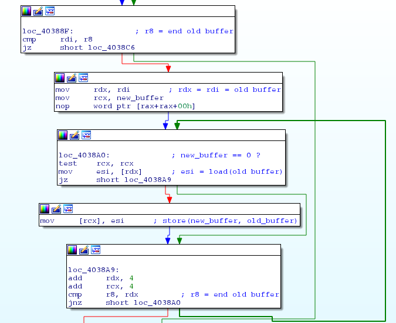
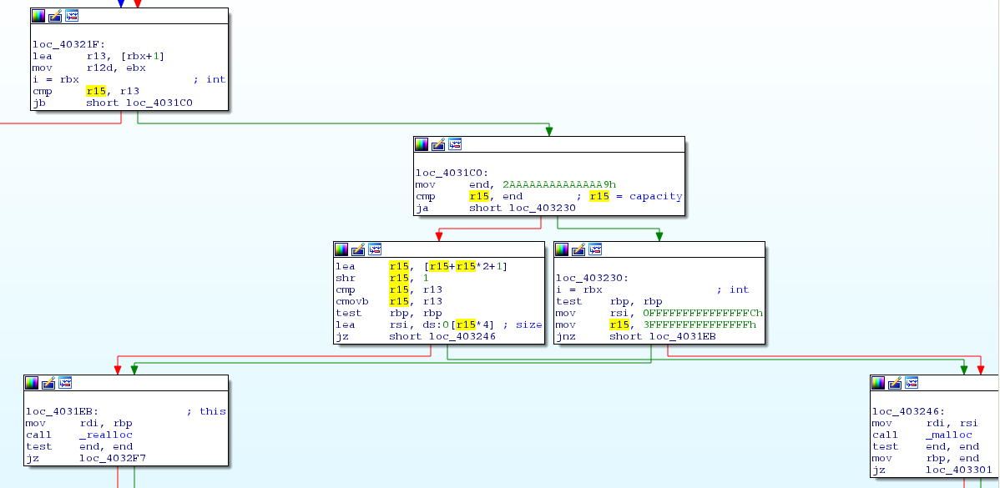
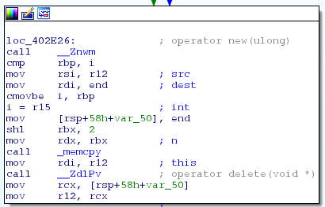

https://github.com/aguinet/pector
C++FRUG #6 - Adrien Guinet (@adriengnt)
5 mars 2015
template <class T>
T* sum(size_t const n, T const* a, T const* b)
{
T* res = (T*) malloc(sizeof(T)*n);
for (size_t i = 0; i < n; i++) {
res[i] = a[i]+b[i];
}
return res;
}
Compiled with: -O3 -march=native -mtune=native -DNDEBUG
Run with n = 100 000 000
| Integer type | C version | |
| T = int | 116ms / 6573 MB/s | |
| T = short | 58ms / 6558 MB/s |
This is memory-bound!
// "Modern" C++ poor-man version
template <class T>
std::vector<T> sum_vec(size_t const n, T const* a, T const* b)
{
std::vector<T> ret;
ret.resize(n);
for (size_t i = 0; i < n; i++) {
ret[i] = a[i] + b[i];
}
return ret;
}
Compiled with: -O3 -march=native -mtune=native -DNDEBUG
Run with n = 100 000 000
| Integer type | C version | C++ naive version |
| T = int | 116ms / 6573 MB/s | 178ms / 4286 MB/s |
| T = short | 58ms / 6558 MB/s | 84ms / 4529 MB/s |
WOW!
Hypothesis: introduced memset call...
template <class T>
T* sum_memset(size_t const n, T const* a, T const* b)
{
T* res = (T*) malloc(sizeof(int)*n);
memset(res, 0, sizeof(int)*n);
for (size_t i = 0; i < n; i++) {
res[i] = a[i]+b[i];
}
return res;
}
| Integer type | C version | C++ naive version | C version + memset |
| T = int | 116ms / 6573 MB/s | 178ms / 4286 MB/s | 164ms / 4636 MB/s |
| T = short | 58ms / 6558 MB/s | 84ms / 4529 MB/s | 79ms / 4828 MB/s |
Demo: double-check with IDA...
template <class T>
std::vector<T> sum_vec_reserve(size_t const n, T const* a, T const* b)
{
std::vector<T> ret;
ret.reserve(n);
for (size_t i = 0; i < n; i++) {
ret.emplace_back(a[i] + b[i]);
}
return ret;
}
| Integer type | C version | C++ naive version | C version + memset | C++ version + reserve |
| T = int | 116ms / 6573 MB/s | 178ms / 4286 MB/s | 164ms / 4636 MB/s | 275ms / 2773 MB/s |
| T = short | 58ms / 6558 MB/s | 84ms / 4529 MB/s | 79ms / 4828 MB/s | 224ms / 1699 MB/s |
Loses automatic vectorization... :/ (gcc/IDA proof)
We need an interface that changes the capacity and the size of the container.
The user would be responsible of creating the underlying objects (in-place new).
What happens when a new element is inserted and the capacity of the vector isn't big enough?
What if you want something different?
You need to rewrite a custom container class... (and you don't have time for this ;))
template <class T>
std::vector<T> push_values(size_t const n)
{
std::vector<T> ret;
for (size_t i = 0; i < n; i++) {
ret.emplace_back(i);
}
return ret;
}
What does emplace_back do?
void emplace_back(_Args&&... __args)
{
if (this->_M_impl._M_finish != this->_M_impl._M_end_of_storage) {
// room available!
// ...
}
else {
const size_type __len =
_M_check_len(size_type(1), "vector::_M_emplace_back_aux");
pointer __new_start(this->_M_allocate(__len));
// Copy objects from the old buffer
_Alloc_traits::construct(this->_M_impl, __new_start + size(),
std::forward<_Args>(__args)...);
// ...
std::_Destroy(this->_M_impl._M_start, this->_M_impl._M_finish,
_M_get_Tp_allocator());
_M_deallocate(this->_M_impl._M_start,
this->_M_impl._M_end_of_storage - this->_M_impl._M_start);
// [...]
}
}
Lacks of memcpy for POD types...

On 64-bits x86 machines, w/ clang, gcc & MSVC2015
template <T>
class vector {
T* begin;
T* end;
T* storage_end;
};
sizeof(std::vector<T>) == 3*sizeof(T*)
sizeof(std::vector<int>)
> 24
First need was to fix the previous issues...
Existing libraries:
sizeof(SmallVector<T,N>) = N*sizeof(T) + 3*sizeof(T*)Nothing fixed what we wanted, so we just made something new...
template <class T>
pt::pector<T> sum_pector(size_t const n, T* a, T* b)
{
pt::pector<T> ret;
ret.resize_no_construct(n);
for (size_t i = 0; i < n; i++) {
new (&ret[i]) (a[i] + b[i]);
}
return ret;
}
| Integer type | C version | C++ naive version | C version + memset | C++ version + reserve | C++ pector version |
| T = int | 116ms / 6573 MB/s | 178ms / 4286 MB/s | 164ms / 4636 MB/s | 275ms / 2773 MB/s | 125ms / 6094 MB/s |
| T = short | 58ms / 6558 MB/s | 84ms / 4529 MB/s | 79ms / 4828 MB/s | 224ms / 1699 MB/s | 62ms / 6090 MB/s |
Sounds better !
By how much one container should grow if it needs to
(during element insertion)?
pt::pector<int, std::allocator<int>, size_t, pt::recommanded_size_multipply_by<3,2>>
pt::pector<int, std::allocator<int>, size_t, pt::recommanded_size_add_by<10>>
pt::pector<int, std::allocator<int>, size_t, pt::recommanded_size_dummy>
Implement your own:
struct my_recommended_size
{
template <class SizeType>
static inline SizeType recommended(
SizeType const max_size, // maximum capacity (usually SIZE_MAX/sizeof(T))
SizeType const old_cap, // old capacity of the vector
SizeType const new_cap // new minimal & necessary capacity of the vector
)
{
SizeType ret;
// Compute new wanted capacity here
// Check for overflows!
assert(ret >= new_cap);
return ret;
}
};
and share it on github if it is cool :)
Why implementing his own?
template <class T>
std::vector<T> push_values(size_t const n)
{
pt::pector<T, pt::malloc_allocator<T>> ret;
for (size_t i = 0; i < n; i++) {
ret.emplace_back(i);
}
return ret;
}
void emplace_back(Args&& ... args)
{
const size_type new_size = _storage.grow_if_needed(1);
_storage.construct_args(_storage.end(), std::forward<Args>(args)...);
_storage.force_size(new_size);
}
grow_if_needed does two things (if growing is actually needed):

Run on a Core(TM) i7-3520M, gcc 4.9.2 (-O3 -march=native).
Mean run between 10 runs.
|
without realloc support
|
with realloc support
|

|
pector structure
|
std::vector structure
|
which allows...:
sizeof(pt::pector<int, std::allocator<int>, uint32_t>)
> 16
sizeof(pt::pector<int, std::allocator<int>, uint16_t>)
> 12
Use malloc_usable_size (or equivalent) if available:
Example (with #pragma pack(1)):
sizeof(pt::pector<int, pt::malloc_allocator<true, true>, uint32_t>)
> 12
sizeof(pt::pector<int, pt::malloc_allocator<true, true>, uint16_t>)
> 10
|
without malloc_usable_size support
|
with malloc_usable_size support
|
int main()
{
pector<size_t, malloc_allocator<int, false, false>, size_t, recommended_size_dummy, false> v;
v.emplace_back(10);
return !(v.front() == 10);
}
without checks on what malloc returns...:
pointer allocate(size_type n, const void* /*hint*/ = 0)
{
pointer const ret = reinterpret_cast<pointer>(malloc(n*sizeof(value_type)));
/*if (ret == nullptr) {
throw std::bad_alloc();
}*/
return ret;
}
gives (clang 3.5, -O2):
public main
xor eax, eax
retn
Then, just include:
#include <pector/pector.h>And replace:
std::vector<...>pt::pector<...>
Special thanks to:
https://github.com/aguinet/pector
Twitter: @adriengnt
Mail: adrien@guinet.me